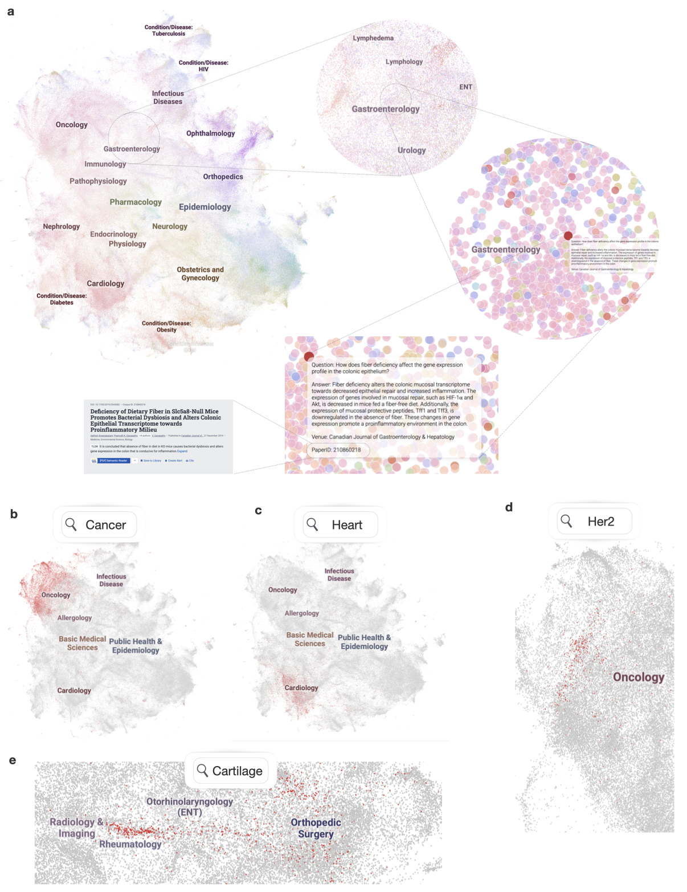

How is MIRIAD created?

Large language models (LLMs) are bound to transform healthcare with advanced decision support and flexible chat assistants. However, LLMs are prone to generate inaccurate medical content. In order to ground LLMs in high-quality medical knowledge, LLMs have been equipped with external knowledge sources via retrieval augmented generation (RAG), where unstructured medical knowledge is split into small chunks of text that can be selectively retrieved and integrated into the LLMs context. Yet, existing RAG pipelines rely on raw, unstructured medical text, which can be noisy, uncurated, and difficult for LLMs to effectively leverage. Systematic approaches to organize medical knowledge and to best surface it to LLMs are generally lacking.
To address these challenges, here, we introduce MIRIAD, a large-scale, curated corpus of 5,821,948 medical instruction-response pairs, each rephrased from and grounded in a passage from peer-reviewed medical literature using a semi-automated pipeline combining LLM generation, filtering, grounding, and human annotation. Unlike prior medical corpora, which rely on unstructured text, MIRIAD encapsulates rich and web-scale medical knowledge in an operationalized query-response format, which enables more targeted retrieval. Experiments on challenging medical question-answering benchmarks show that augmenting LLMs with MIRIAD improves accuracy up to 6.7% compared to unstructured RAG baselines with the same source corpus and with the same amount of retrieved text. Moreover, MIRIAD improved the ability of LLMs to detect medical hallucinations by 22.5 to 37% (increase in F1 score).
We further introduce MIRIAD-Atlas, an interactive semantic map of MIRIAD spanning 56 medical disciplines, enabling clinical users to visually explore, search, and refine medical knowledge. MIRIAD promises to unlock a wealth of down-stream applications, including medical information retrievers, enhanced RAG applications, and knowledge-grounded chat interfaces, which ultimately enables more reliable LLM applications in healthcare.
For both AI practitioners and clinical professionals, MIRIAD enables a range of down-stream use cases, including serving as a structured corpus of external knowledge for retrieval augmented generation (RAG) applications for more effective retrieval; a supervised dataset for training medical information retrievers, which contains millions of query-response pairs and metadata of information source; as well as advanced interfaces for users to visually explore, search, and navigate a structured landscape of medical queries and responses, with clickable follow-up literature.
Check out the interactive demo.

@misc{zheng2025miriadaugmentingllmsmillions,
title={MIRIAD: Augmenting LLMs with millions of medical query-response pairs},
author={Qinyue Zheng and Salman Abdullah and Sam Rawal and Cyril Zakka and Sophie Ostmeier and Maximilian Purk and Eduardo Reis and Eric J. Topol and Jure Leskovec and Michael Moor},
year={2025},
eprint={2506.06091},
archivePrefix={arXiv},
primaryClass={cs.CL},
url={https://arxiv.org/abs/2506.06091},
}